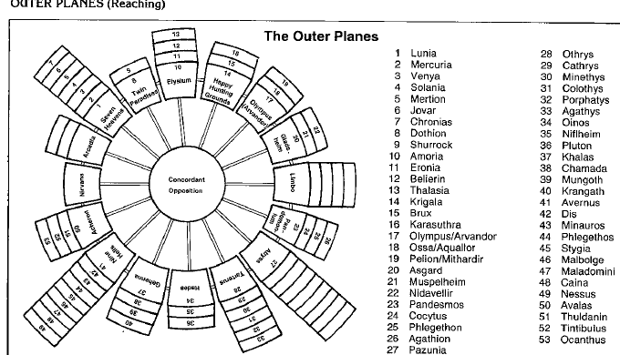

外层位面与阵营 · Creature Alignments and Layers
| 位面 | 阵营 | 层数 |
|---|---|---|
| 尼瓦尔 Nirvana | 守序中立 | 1 |
| 阿卡狄 Arcadia | 守序善良／守序中立 | 3 |
| 七重天堂 Seven Heavens | 守序善良 | 7 |
| 双子天堂 Twin Paradises | 中立善良／守序善良 | 2 |
| 伊吕希昂 Elysium | 中立善良 | 4 |
| 快乐狩猎场 Happy Hunting Grounds | 中立善良／混乱善良 | 3 |
| 奥林匹斯山 Olympus | 混乱善良 | 3 |
| 盖勒斯尼姆 Gladsheim | 混乱善良／混乱中立 | 3 |
| 林勃 Limbo | 混乱中立 | 5 |
| 潘德莫尼姆 Pandemonium | 混乱中立／混乱邪恶 | 4 |
| 深渊 Abyss | 混乱邪恶 | 666（估计） |
| 塔纳厘 Tarterus | 中立邪恶／混乱邪恶 | 6 |
| 哈迪斯 Hades | 中立邪恶 | 3 |
| 格赫纳 Gehenna | 守序邪恶／中立邪恶 | 4 |
| 九层地狱 Nine Hells | 守序邪恶 | 9 |
| 尼维尔海姆 Niflheim | 守序邪恶／中立邪恶 | 9 |
| 阿刻戎 Acheron | 守序中立／守序邪恶 | 4 |
| 协调对立 Concordant Opposition | 真正中立 | 1 |
这些名称既指位面，也常指其居民奉行的阵营。大多数居民会把自己的位面视为宇宙秩序的正确形态；协调对立例外，它包含多种互相冲突的力量。地下城主可以根据战役需要修改层数、名称和各层通道。

上一节：外层位面 · The Outer Planes
下一节：到达外层位面 · Reaching the Outer Planes